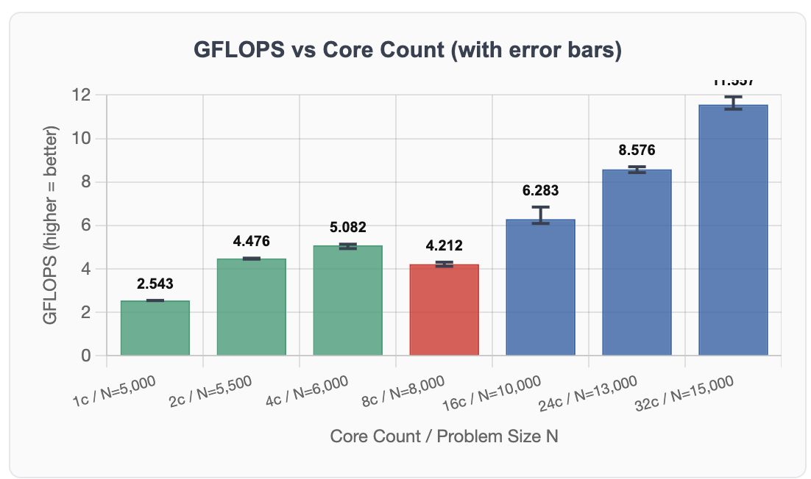
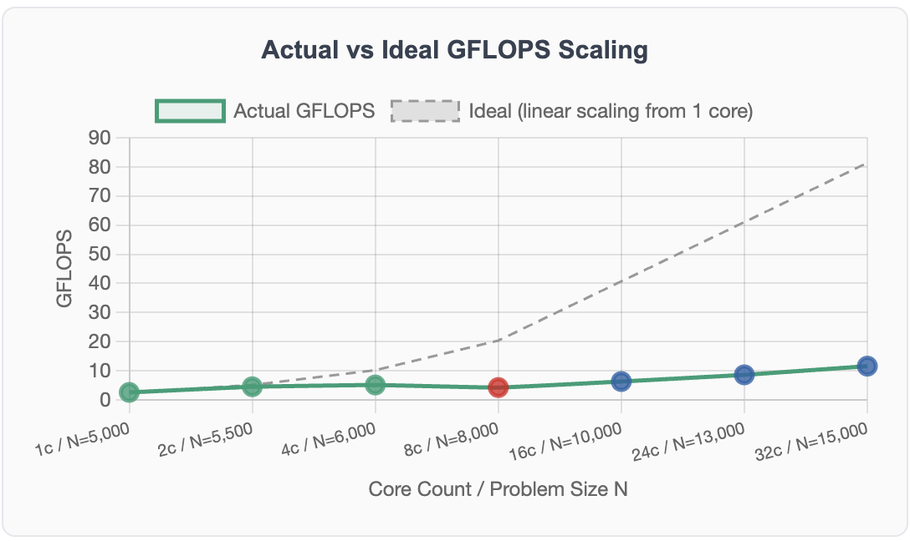

Measuring sustained floating-point performance of the cluster using the industry-standard High Performance LINPACK benchmark.
HPL (High Performance LINPACK) is the industry-standard benchmark used to rank the TOP500 supercomputers worldwide. It measures how fast a system can solve a dense system of linear equations using LU factorization with partial pivoting. The result is reported in GFLOPS (billions of floating-point operations per second) — higher is better.
We used the HPCC 1.5.0 package which includes HPL alongside other benchmarks. All compute ran exclusively on the 8× Pi3 nodes (32 cores total). The Pi5 master node was excluded from compute — it runs production services simultaneously (k3s, inference, PostgreSQL, MinIO, Prometheus).
HPL performance scales with problem size — a larger N means more compute per communication event, which improves efficiency. However N is constrained by available RAM: the matrix requires N² × 8 bytes of memory distributed across all MPI processes.
We used the following formula to select the largest N that fits safely in RAM without triggering swap:
N = sqrt(0.7 × num_nodes × available_RAM_per_node / 8) Where: 0.7 = safety factor (use only 70% of RAM, leave room for OS) num_nodes = number of Pi3 nodes participating 600 MB = safe usable RAM per Pi3 (out of 1024MB total) 8 = bytes per double-precision float Example: 4 cores (1 node) N = sqrt(0.7 × 1 × 600MB / 8) = sqrt(52,500,000) ≈ 7,245 Rounded down to N=6000 to stay well within limits.
We initially tested N=7000 at 4 cores — this caused memory swap on pi3-01, degrading performance significantly. We reduced to N=6000 which fits cleanly within available RAM. Similarly, N=11000 at 16 cores caused pi3-01 to crash due to combined memory pressure and power instability on pi3-02. Reduced to N=10000 which ran stably.
| Cores | Nodes | N | P×Q Grid | Matrix Size | Notes |
|---|---|---|---|---|---|
| 1 | 1 | 5,000 | 1×1 | ~190 MB | Safe — fits in 1GB |
| 2 | 1 | 5,500 | 1×2 | ~230 MB | Safe — same node |
| 4 | 1 | 6,000 | 2×2 | ~274 MB | Reduced from 7000 (swap at pi3-01) |
| 8 | 2 | 8,000 | 2×4 | ~244 MB/node | pi3-02 excluded (power instability) |
| 16 | 4 | 10,000 | 4×4 | ~190 MB/node | Reduced from 11000 (crash at pi3-01) |
| 24 | 6 | 13,000 | 4×6 | ~222 MB/node | Stable — no issues |
| 32 | 8 | 15,000 | 4×8 | ~222 MB/node | Includes pi3-02 (load distributed) |
N=7000, 4 cores (pi3-01): Memory swap detected — performance degraded badly. Reduced to N=6000.
N=11000, 16 cores: pi3-01 ran out of memory and crashed mid-run (SSH connection refused). Combined effect of pi3-02 power instability and memory pressure. Reduced to N=10000 which ran stably with 4 valid runs.
N≥8000, 8 cores with pi3-02: pi3-02 spontaneously rebooted under sustained HPL load — confirmed as power supply limitation. Node excluded from 8 and 16 core configurations.
Pi3-02 was placed last in the node order due to power instability under sustained HPL load. It is only used at 32 cores where the load is distributed across all 8 nodes.
pi3-01 → pi3-03 → pi3-04 → pi3-05 → pi3-06 → pi3-07 → pi3-08 → pi3-02 (last)
Before running, stop k3s-agent on all Pi3 nodes and ensure the correct hpccinf.txt is copied to all participating nodes.
for ip in 10.10.10.21 10.10.10.22 10.10.10.23 10.10.10.24 \ 10.10.10.25 10.10.10.26 10.10.10.27 10.10.10.28; do ssh admin@$ip "sudo systemctl stop k3s-agent" & done wait
# Replace <CORES> with: 1, 2, 4, 8, 16, 24, or 32 python3 -c " cores = <CORES> nodes = ['pi3-01','pi3-03','pi3-04','pi3-05','pi3-06','pi3-07','pi3-08','pi3-02'] remaining = cores for n in nodes: if remaining <= 0: break slots = min(4, remaining) print(f'{n} slots={slots}') remaining -= slots " > /tmp/hpl_hostfile
# hpccinf.txt files are in /nfs/shared/hpl-tests/ # Copy the correct config for your core count for ip in <NODE_IPs>; do scp /nfs/shared/hpl-tests/HPL_<CORES>cores.dat \ admin@$ip:~/hpccinf.txt & done wait
# Clear previous result ssh admin@10.10.10.21 "rm -f ~/hpccoutf.txt" # Run benchmark cd /home/admin mpirun -np <CORES> --hostfile /tmp/hpl_hostfile hpcc # Fetch GFLOPS result (look for WR line) ssh admin@10.10.10.21 "grep 'WR' ~/hpccoutf.txt | tail -1" # Example output: WR11C2R4 15000 128 4 8 421.72 1.156e+01 # ↑ GFLOPS
HPL writes results to ~/hpccoutf.txt on the first MPI rank node (pi3-01).
The WR line contains the GFLOPS result — the last number on that line.
Full interactive results with min/max/mean per configuration are available on the results page. Below is a summary with chart placeholders.


Theoretical peak for 32× ARM Cortex-A53 at 1.4GHz = ~89.6 GFLOPS. Achieved efficiency: 13.3% — typical for ARM single-board computer clusters and consistent with Prof. Baun's published research on Pi clusters.
GFLOPS drops from 5.082 (4 cores, 1 node) to 4.576 (8 cores, 2 nodes) when crossing the first node boundary. LU factorization requires constant inter-node row/column exchanges — the communication cost exceeds the benefit of additional cores at this problem size.
Pi3-02 spontaneously reboots under sustained HPL load with N≥8000. Confirmed as a power supply limitation. Mitigated by placing pi3-02 last in the node order — only participates at 32 cores.
The dip at 8 cores demonstrates Amdahl's Law — the serial fraction (inter-node LU communication) dominates when first crossing a node boundary. Performance recovers at 16+ cores as larger N values increase the parallel fraction.